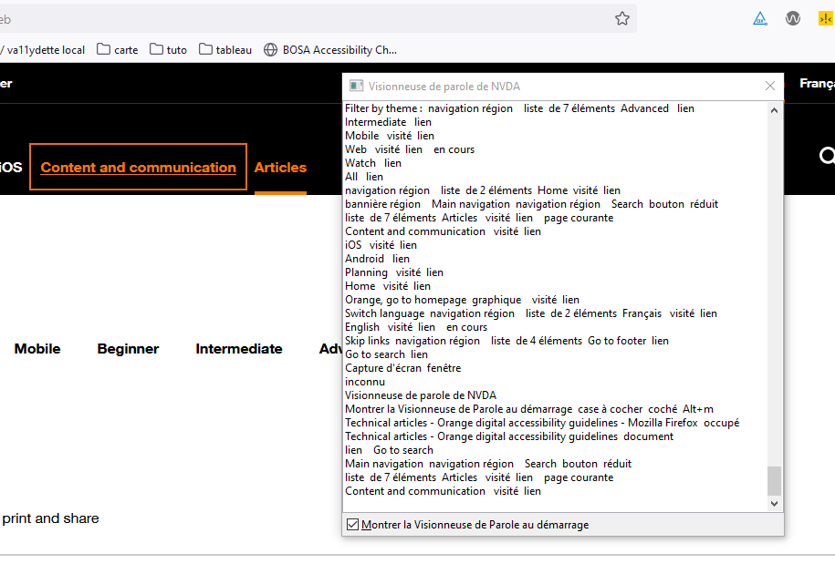
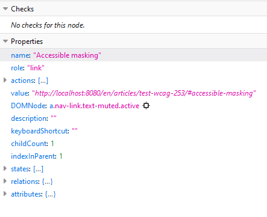
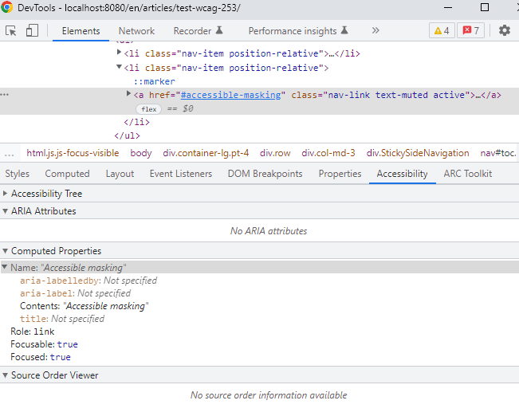

How to test the WCAG 2.5.3?
Associated themes:- Web
- Intermediate
Publication date
Update of the article from
Objective of the Criterion #
WCAG 2.5.3 – Label in Name aims to ensure that when an interactive element (button, link, input field, etc.) displays visible text on the screen, that same text is also included in its accessible name.
This allows users of assistive technologies (particularly speech recognition software) to correctly understand and interact with the interface.
These tools rely on the accessible name to identify and activate elements.
The visible text does not need to be strictly identical to the accessible name, but it must at minimum be included within it — ideally at the beginning.
Concrete Example #
Problematic #
Consider a user navigating with speech recognition software who wants to fill out and submit a form.
<button>
<img src="send.png" alt="Submit">
</button>
In this example, the button visually displays the word « Send » (in the image), but the alternative text is « Submit ». The accessible name of the button therefore becomes Submit.
Result: a speech recognition user who says « Click Send » will not be able to activate the button, because the assistant will not recognize that name.
Compliant Example #
<button>
<img src="send.png" alt="Send">
</button>
The accessible name now contains the word « Send », identical to the visible text. WCAG 2.5.3 is therefore satisfied.
Be Careful with Visually Hidden Content #
Hidden content should not be inserted in the middle of the visible label (it should be placed at the end instead), otherwise the criterion will fail and the element may not work properly with speech input.
Example of an Error #
<a href="www.orange.com" target="_blank"> Open <span class="visually-hidden">in a new window </span> the Orange website </a>
The accessible name becomes:
« Open in a new window the Orange website »
But the user only sees:
« Open the Orange website »
With speech recognition, saying « Open the Orange website » will not work, because this text does not match the actual accessible name.
How to Test Compliance #
1. Using a Screen Reader #
The screen reader announces:
- the element’s role (button, link, text, etc.),
- its state,
- and its accessible name.
Procedure:
- Navigate the page using a screen reader.
- Listen to the name announced for each button or link.
- If this name does not match the visible text, the criterion is not satisfied.
Some screen readers provide a speech viewer that displays the accessible name in text form, making comparison with the visible label easier.

2. Using Developer Tools #
The method for verifying the criterion with browser developer tools depends on the browser used.
In Firefox #
- Open Developer Tools:
Ctrl + Shift + I - Select the Accessibility tab
- Inspect the element to verify
- In the Properties section, check that the name attribute contains at least the visible on-screen text

In Chrome or Edge (Chromium) #
- Open Developer Tools:
Ctrl + Shift + I - Select the Elements tab
- Choose the element to inspect
- Click the Accessibility tab (it may be hidden under « More tabs »)
- In the Computed Properties section, verify that the name attribute contains at least the displayed text

Summary #
To comply with WCAG 2.5.3, make sure that:
- The visible text of an element is included in its accessible name, preferably at the beginning.
- Hidden content does not alter the correspondence between visible text and accessible name.
- Testing is performed using a screen reader and/or an accessibility inspector.
Related Resources: